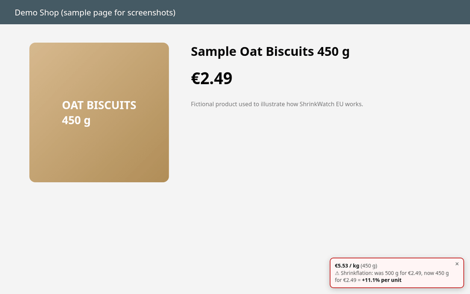

ShrinkWatch EU is a free, open-source browser extension for Chrome, Edge and Firefox. On Tommy (tommy.hr) it shows the price per kg, litre or piece next to the product and warns you when a product you looked at before comes back in a smaller pack for the same or a higher price.

What you see on Tommy
- A small badge with the unit price, calculated from the price and pack size on the page.
- If the shop shows its own unit price, the badge cross-checks it and shows the shop's figure when the two disagree.
- A shrinkflation warning such as "was 500 g, now 450 g, +11.1% per kg" when your local history shows a smaller pack.
Status on Tommy
Tommy works right after install, on product pages and also on category and search tiles, where it adds the unit price to each product.
It works right after you install it.
Unit prices and the law
In the EU, Directive 98/6/EC on consumer protection in the indication of the prices of products requires traders to show the unit price (for example per kilogram or per litre) next to the selling price. Online shops selling to consumers are covered too. The unit price is there so you can compare packs of different sizes, but it is easy to miss and it says nothing about how the pack changed over time. More on the rules.
Privacy
No account, no tracking, no network requests. Pack sizes and prices you have seen are stored only in your browser.